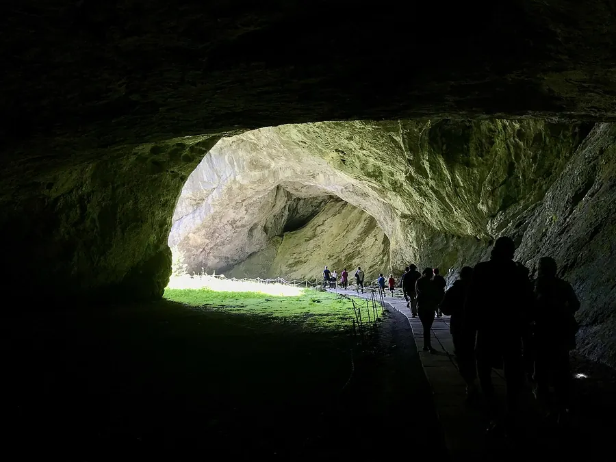
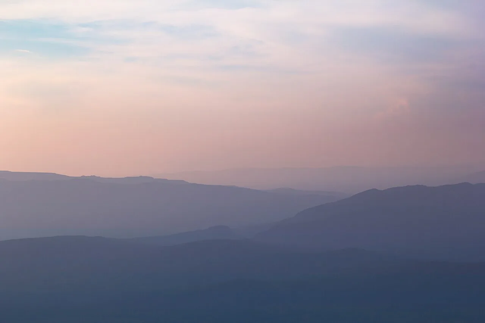
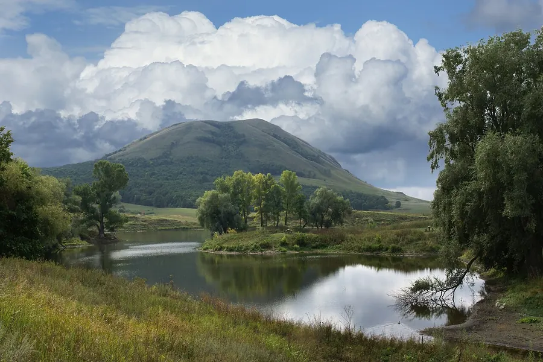
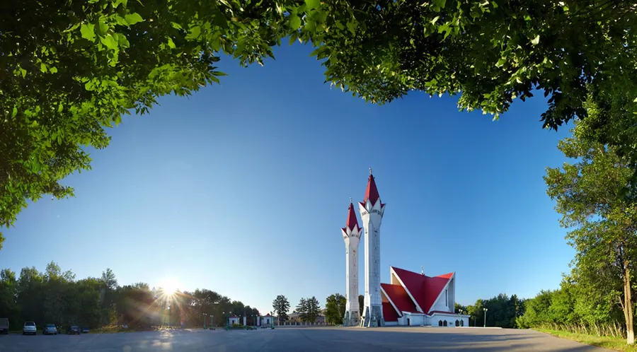
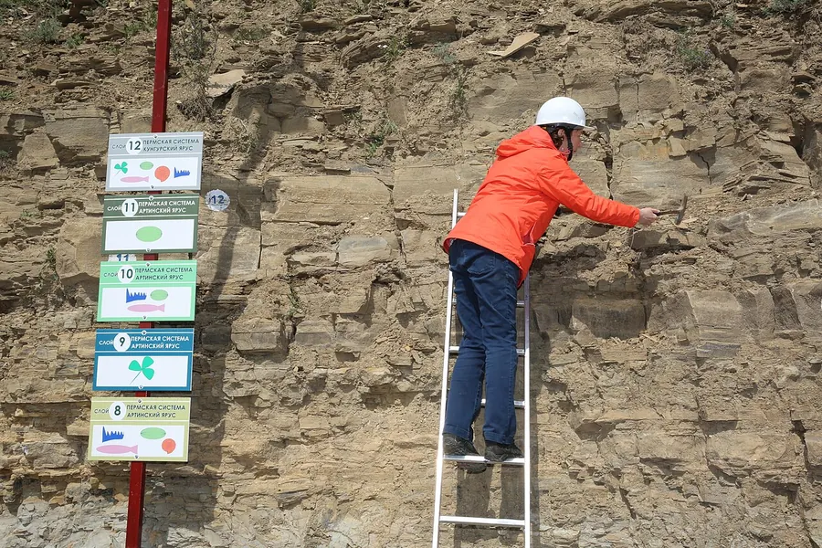

Пещера Шульган-Таш
В пещере, также известной как Капова, сохранились изображения животных и знаков эпохи палеолита. У входа в заповедник работает музейный комплекс.
На Южном Урале степь подходит к горным хребтам, а Белая петляет между скалами. Здесь можно увидеть следы древнего моря и пещеру с рисунками ледниковой эпохи.

Башкортостан занимает часть Южного Урала, его западные предгорья и прилегающие равнины. Столица, Уфа, выросла у рек Белой и Уфы. Среди крупных городов республики — Стерлитамак, Салават и Нефтекамск.
Соглашение центральной советской власти с Башкирским правительством закрепило образование Башкирской автономной республики.
Территория автономии расширилась за счёт большей части Уфимской губернии. Административным центром стала Уфа.
Верховный Совет принял Декларацию о государственном суверенитете республики.
Закрепилось современное название — Республика Башкортостан.
Принята Конституция Республики Башкортостан.

В пещере, также известной как Капова, сохранились изображения животных и знаков эпохи палеолита. У входа в заповедник работает музейный комплекс.

Одиночная известняковая гора возле Ишимбая. Её породы хранят следы древней морской жизни.

Уфимскую мечеть легко узнать по двум минаретам, напоминающим бутоны тюльпанов.

В долине Юрюзани можно познакомиться с геологией Южного Урала. На разрезе Мечетлино в слоях пород находят окаменелости древних морских организмов.
Равнины запада сменяются лесистыми хребтами Южного Урала и степями Зауралья. Белая, которую по-башкирски называют Агидель, собирает воды горных рек. Один из известных горных массивов республики — Иремель.
Курай, духовой инструмент, звучит в башкирской народной музыке. В заповеднике «Шульган-Таш» сохраняют бортничество — традиционный промысел, при котором пчёлы живут в дуплах деревьев.
Бишбармак готовят из мяса и кусочков теста, а кумыс — из кобыльего молока. Бортевой мёд связан с традициями Бурзянского района.